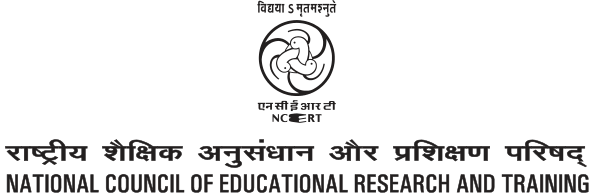
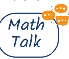
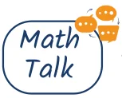

GANITA PRAKASH
TEXTBOOK OF MATHEMATICS

0874 – Ganita Prakash
Textbook of Mathematics for Grade 8 (Part-I)
ISBN 978-93-5729-642-7
First Edition
July 2025 Ashadha 1947
Reprinted
January 2026 Magha 1947
PD 680T BS
©National Council of Educational Research and Training, 2025
₹ 65.00
Printed on 80 GSM paper with NCERT watermark
Published at the Publication Division by the Secretary, National Council of Educational Research and Training, Sri Aurobindo Marg, New Delhi 110 016 and printed at Kalyan Enterprises, D-20, Sector B-3, Trans Delhi Signature City (Tronica City) Industrial Area, Loni, Ghaziabad (U.P.) 201101
ALL RIGHTS RESERVED
- No part of this publication may be reproduced, stored in a retrieval system or transmitted, in any form or by any means, electronic, mechanical, photocopying, recording or otherwise without the prior permission of the publisher.
- This book is sold subject to the condition that it shall not, by way of trade, be lent, re-sold, hired out or otherwise disposed of without the publisher’s consent, in any form of binding or cover other than that in which it is published.
- The correct price of this publication is the price printed on this page, Any revised price indicated by a rubber stamp or by a sticker or by any other means is incorrect and should be unacceptable.
OFFICES OF THE PUBLICATION DIVISION, NCERT
NCERT Campus
Sri Aurobindo Marg
New Delhi 110 016 Phone : 011-26562708
108, 100 Feet Road
Hosdakere Halli Extension
Banashankari III Stage
Bengaluru 560 085 Phone : 080-26725740
Navjivan Trust Building
P.O.Navjivan
Ahmedabad 380 014 Phone : 079-27541446
CWC Campus
Opp. Dhankal Bus Stop
Panihati
Kolkata 700 114 Phone : 033-25530454
CWC Complex
Maligaon
Guwahati 781 021 Phone : 0361-2674869
Publication Team
Head, Publication Division : M.V. Srinivasan
Chief Editor : Bijnan Sutar
Chief Business Manager : Amitabh Kumar
Chief Production Officer (In charge) : Deepak Jaiswal
Assistant Production Officer : Prakash Veer Singh
Cover and Layout
Creative Art Studio
Illustrations
Chetan Sharma and Madhushree Basu
FOREWORD
The National Education Policy (NEP) 2020 envisages a system of education in the country that is rooted in an Indian ethos and its civilisational accomplishments in all fields of knowledge and human endeavour. At the same time, it aims to prepare students to engage constructively with the opportunities and challenges of the twenty-first century. The basis for this aspirational vision has been well laid out by the National Curriculum Framework for School Education (NCF-SE) 2023 across curricular areas at all stages. By nurturing students’ inherent abilities across all five planes of human existence (pañchakośhas), the Foundational and Preparatory Stages set the Stage for further learning at the Middle Stage. Spanning Grades 6 to 8, the Middle Stage serves as a critical three-year bridge between the Preparatory and Secondary Stages. The NCF-SE 2023, at the Middle Stage, aims to equip students with the skills that are needed to grow, as they advance in their lives. It aims to enhance their analytical, descriptive, and narrative capabilities, and to prepare them for the challenges and opportunities that await them. A diverse curriculum, covering nine subjects ranging from three languages - including at least two languages native to India - to Science, Mathematics, Social Sciences, Art Education, Physical Education and Well-being, and Vocational Education promotes their holistic development. Such a transformative learning culture requires certain essential conditions. One of them is to have appropriate textbooks in different curricular areas, as these textbooks are intended to play a central role in mediating between content and pedagogy’s role that helps strike a judicious balance between direct instruction and opportunities for exploration and inquiry. Among the other conditions, classroom arrangement and teacher preparation are crucial to establish conceptual connections both within and across curricular areas. The National Council of Educational Research and Training (NCERT), on its part, is committed to providing students with such high-quality textbooks. Various Curricular Area Groups (CAGs), which have been constituted for this purpose, comprising notable subject-experts, pedagogues, and practising teachers as their members, have made all possible efforts to develop such textbooks. Ganita Prakash, the textbook of mathematics for Grade 8 (Part 1) is designed to make learning fun, engaging, and meaningful. Aligned with NEP 2020 and NCF-SE 2023, the textbook continues to foster the spirit of experiential and inquiry-based learning, a spirit already introduced in the mathematics textbooks for Grades 6 and 7. It encourages students to ask questions, think critically, and understand concepts of mathematics through real-world contexts.
The textbook makes efforts to encourage the students to observe and explore patterns around them and discover mathematical concepts on their own. The content is structured in a way that supports a joyful and progressive understanding of increasingly complex concepts, easing students into more advanced learning. The content attempts to integrate mathematics with other subject areas, such as Science, Social Science with cross-cutting themes like environmental education, value education, inclusive education, and Indian Knowledge Systems (IKS). At most of the places the concept begins with either a story or a puzzle that not only makes students think but also feels the importance of the concept. However, in addition to this textbook, students at this stage should also be encouraged to explore various other learning resources. School libraries play a crucial role in making such resources available. Besides, the role of parents and teachers will also be invaluable in guiding and encouraging students to do so. With this, I express my gratitude to all those who have been involved in the development of this textbook, and hope that it will meet the expectations of all stakeholders. At the same time, I also invite suggestions and feedback from all its users for further improvement in the coming years.
Dinesh Prasad Saklani
Director
National Council of Educational
Research and Training
New Delhi
June 2025
ABOUT THE BOOK
Mathematics helps students develop not only basic arithmetic skills, but also the crucial capacities of logical reasoning, creative problem-solving, and clear and precise communication (both oral and written). Mathematical knowledge also plays a crucial role in understanding concepts in other school subjects, such as Science and Social Science, and even Arts, Physical Education, and Vocational Education. Learning Mathematics contributes to the development of capacities to make informed choices and decisions. Understanding numbers and quantitative arguments is necessary for effective and meaningful democratic and economic participation. Mathematics thus plays an important role in achieving the overall aims of school education. Mathematics at the Middle Stage is a major challenge and performs the dual role of being both close to the experience and environment of a learner and being abstract. It performs the role of developing intuition, while also maintaining and emphasising rigour. It is enhancing critical and logical thinking, while also developing artistry and creativity, and a sense of elegance and aesthetics. Mathematics provides students with plenty of opportunities to explore and discover concepts on their own while also teaching the best-known methods in the global repertoire of mathematics. This textbook attempts to address the goals and challenges of learning mathematics. The writers have aimed to strike a judicious balance between informal and formal definitions and methods in helping students to develop both intuition and rigour. The textbook also provides numerous opportunities for student-student and student - teacher interaction in the classroom to promote active and experiential learning. A number of questions, puzzles, and interactive exercises are posed throughout the textbook to encourage constant exploration. Many of the questions are open-ended to stimulate classroom discussion. The Chapter 1: ‘A Square and A Cube’ is an introduction to the special types of numbers called squares and cubes through engaging explorations, and contexts. Chapter 2: ‘Power Play’ considers short and logical ways of expressing very large numbers, and discusses how they can be written and read without ambiguity. Chapter 3: ‘A Story of Numbers’ reveals how the idea of number and number representation evolved over the course of time, across different places in the world, to finally reach its modern efficient form. Chapter 4: ‘Quadrilaterals’ discusses some interesting types of four-sided figures and problems based on them. Chapter 5: ‘Number Play’ shows different properties of numbers studied by the students with a balance of engaging activities
through visualisation and rigorous mathematical reasoning. Chapter 6: ‘We Distribute, Yet Things Multiply’ covers aspects related to Algebra, and in particular, the distributive law. Chapter 7: ‘Proportional Reasoning’ explores a new way to compare two quantities using daily life situations. In all the chapters, an attempt has been made to emphasise connections with other subjects including Art, History and Science. By weaving storytelling and hands-on activities together, as done in Grades 6 and 7, we hope that an immersive learning experience will be created that ignites curiosity and fosters a love for mathematics. It is hoped that teachers would give students the opportunity to discuss, play, engage with each other and provide logical arguments for different ideas, and find loopholes in arguments presented. This is necessary for the learners to eventually develop the ability to understand what it means to prove something and also become confident about the underlying concepts. The mathematics classroom should not expect a blind application of algorithms but should rather encourage students to find many different ways to solve problems. As per the National Education Policy (NEP) 2020, computational thinking has also been gently introduced through puzzles, games, and interactive exercises that encourage students on these aspects. Indian rootedness has also been kept in mind while giving contexts for different concepts. The contributions of Indian mathematicians have also been given as part of a problem-solving approach to make students aware of India’s rich mathematical heritage and its global contributions to mathematics. The concepts and problems in this textbook are related to daily life situations. An attempt has been made to use contexts and materials that students are familiar with. Learning material sheets have been given at the back of the book that may be photocopied and used in the classroom. Exercises or activities are often given to encourage peer group efforts and discussions. However, this textbook intends to address the learning needs of a diverse group of students in the classroom. We have tried to link concepts learnt in initial chapters with ideas in subsequent chapters, to show the connectedness and unity of mathematics. We hope that teachers can revise these concepts in a spiralling way so that students are able to appreciate the entire conceptual structure of mathematics. We hope that teachers may focus more on the ideas of squares and cubes, exponents, evolution of numbers and other notions that are new to the students, and are foundational for further learning. Finally, this textbook aims to be more than just a textbook - it is a passport to a world of mathematical discovery and exploration. Whether used in the classroom or at home, we hope that it inspires
students to embark on their own mathematical adventures, empowering them to see the beauty and relevance of Mathematics in everything. With its engaging approach and comprehensive coverage of Grade 8 mathematics concepts, this textbook aims to captivate young minds and set them on a lifelong journey of mathematical discovery. I once again thank all the writers of and contributors of this textbook for their valuable contribution and service to the nation’s mathematics teachers, learners and enthusiasts. We look forward to your comments and suggestions regarding the textbook and hope that you will send interesting exercises, activities and tasks that you may develop while teaching and learning for future editions.
Ashutosh Wazalwar Professor and Academic Convener Department of Education in Science and Mathematics National Council of Educational Research and Training
NATIONAL SYLLABUS AND TEACHING LEARNING MATERIAL COMMITTEE (NSTC)
- M.C. Pant, Chancellor, National Institute of Educational Planning and Administration (NIEPA) (Chairperson)
- Manjul Bhargava, Professor, Princeton University (Co-Chairperson)
- Sudha Murty, Acclaimed Writer and Educationist
- Bibek Debroy, Chairperson, Economic Advisory Council to the Prime Minister (EAC - PM)
- Shekhar Mande, Former Director General, CSIR, Distinguished Professor, Savitribai Phule Pune University, Pune
- Sujatha Ramdorai, Professor, University of British Columbia, Canada
- Shankar Mahadevan, Music Maestro, Mumbai
- U. Vimal Kumar, Director, Prakash Padukone Badminton Academy, Bengaluru
- Michel Danino, Visiting Professor, IIT – Gandhinagar
- Surina Rajan, IAS (Retd.), Haryana, Former Director General, HIPA
- Chamu Krishna Shastri, Chairperson, Bharatiya Bhasha Samiti, Ministry of Education
- Sanjeev Sanyal, Member, Economic Advisory Council to the Prime Minister (EAC - PM)
- M.D. Srinivas, Chairperson, Centre for Policy Studies, Chennai
- Gajanan Londhe, Head, Programme Office
- Rabin Chhetri, Director, SCERT, Sikkim
- Pratyusa Kumar Mandal, Professor, Department of Education in Social Sciences, NCERT, New Delhi
- Dinesh Kumar, Professor, Department of Education in Science and Mathematics, NCERT, New Delhi
- Kirti Kapur, Professor, Department of Education in Languages, NCERT, New Delhi
- Ranjana Arora, Professor and Head, Department of Curriculum Studies and Development, NCERT (Member-Secretary)
TEXTBOOK DEVELOPMENT TEAM
Contributors
Amartya Kumar Dutta, Professor, Stat-math Unit, Indian Statistical Institute (ISI), Kolkata
Anjali Gupte, Principal (Retd.), Vidya Bhavan Public School, Udaipur
Ashutosh Kedarnath Wazalwar, Professor, Department of Education in Science and Mathematics, NCERT, New Delhi — CAG (Mathematics) (Member Coordinator)
H. S. Sharada, Assistant Mistress, Government High School, M. C. Thalalu, H. D. Kote Taluk, Mysore, Karnataka
Madhavan Mukund, Director, Chennai Mathematical Institute, Chennai — CAG Chairperson (Mathematics)
Madhu B., Assistant Professor, Regional Institute of Education (RIE), Mysuru
Manjul Bhargava, Professor, Princeton University, and Co-Chairperson, NSTC
Padmapriya Shirali, Former Principal, Sahyadri School KFI, Pune
Patanjali Sharma, Assistant Professor, Regional Institute of Education, (RIE), Ajmer
Ramchandar Krishnamurthy, Principal, Azim Premji School, Bengaluru
Shivkumar K. M., Senior Consultant, Programme Office, NSTC,
Shravan S. K., Senior Consultant, Programme Office, NSTC
Reviewers
Aaloka Kanhere, Project Scientific Officer, Homi Bhabha Centre for Science Education, Mumbai
Aparna Lalingakar, Director, Aksharbrahma Consultancy, Pune — (Team Leader)
Rakhi Bannerjee, Associate Professor, Azim Premji University, Bengaluru
Sujatha Ramdorai, Professor, University of British Columbia, Canada, Member NSTC
Vijayan K., Professor, Department of Curriculum Studies and Development, NCERT, New Delhi
ACKNOWLEDGEMENTS
The National Council of Educational Research and Training (NCERT) acknowledges the guidance and support of the esteemed Chairperson and members of the Curricular Area Group (CAG): Mathematics, and other concerned CAGs for their guidelines on cross-cutting themes in developing this textbook. During the development of this textbook, various workshops were organised and subject experts from different Institutions were invited. The NCERT acknowledges the valuable views and inputs given by subject experts - Sreelatha Iyengar, TGT Mathematics, Bengaluru; Jaspal Kaur, TGT (Maths), School of Excellence, Delhi; Sunita Sharma, TGT Mathematics, The Heritage School, Delhi; Sangeeta Solanki, TGT Mathematics, The Heritage School, Delhi; Rishikesh Kumar, Assistant Professor, DESM, NCERT, New Delhi. The Council acknowledges the efforts of Nidhi M. Shastri and Tarun Choubisa from the Programme Office; and Sneha Titus, Cheif Editor, At Right Angles, Azim Premji University, Bengaluru, Ramu MS Philatelist, for providing the pictures of the stamps of some endangered species; Shweta Rao, Banyan Tree, New Delhi for providing Infographic; and Arkaprovo Das for making world maps. Acknowledgements are due for the academic and administrative support of Sunita Farkya, Professor and Head, DESM, NCERT, New Delhi. The Council appreciates the contributions of Sushmita Joshi, Senior Research Associate, Department of Education in Science and Mathematics, NCERT for providing support in the development of the textbook. The NCERT gratefully acknowledges the contributions of Kishore Singhal, Ayaz Ahmad Ansari, DTP Operators (contractual), Publication Division, and Abhilash Kumar, DTP Operator of DESM NCERT for all their efforts. The Council acknowledges the efforts of Ilma Nasir, Editor (contractual); Adiba Tasneem, Ariba Usman, Jatinder Kumar, Praveen Kumar and Talha Faisal Khan, Proofreaders (contractual), Publication Division, NCERT. The Council also appreciates the efforts of Pawan Kumar Barriar, In charge, DTP Cell; Mohan Singh, Vivek Mandal and Anita Kumari DTP Operators (contractual), Publication Division, NCERT, for finalising this textbook.
Note To The Teacher
We hope that this book, Ganita Prakash, will serve as a strong support and guide to you in achieving the exciting task that you have before you: that of passing on the joy of learning the beautiful subject of Mathematics to the next generation. This task calls for providing a fertile environment that allows for the flowering of mathematical thinking in the minds of students. Classrooms,where students just listen and write down whatever is being told to them or written on the board, are deficient in the conditions required for learning mathematics. Instead, classrooms need to be places where students are engaged in playing with mathematical concepts, finding and discussing patterns, and developing creative strategies together to solve problems. Students should also be posing problems to each other and discussing possible solutions with each other. In fact, these are the very conditions that have led to the development of the entire field of mathematics so far, and so one cannot expect students to pick up mathematical thinking and understanding without these conditions. Fortunately, it is not difficult to create such conditions in the classroom. It just requires an interesting question, problem, pattern, or challenge to be thrown open to the students on a regular basis, and sufficient time to be given to them to play with, discuss, and work on it as a class or in pairs or groups. Along with it, an environment that accepts mistakes and acknowledges their importance in learning needs to be nurtured. While creating the spark for initiating mathematical thinking in classrooms is not difficult, sustaining it may be challenging and may involve efforts from your side. Nevertheless, even if just the first part of throwing open a question, problem, pattern, or challenge is done at least once or twice a week, accompanied by sufficient waiting time from your side for students to play, discuss, and work on it, it can have a great positive impact on how the students view and approach mathematics. It should be noted that this positive impact will not happen overnight. That takes time and depends on various factors such as the number of opportunities you give for problem solving, your patience, and the encouragement you give to the students. To support you in posing problems, all the problems or questions in this book are marked using the icons and . These icons are indicators of potential opportunities to start off a process of problem-solving and exploration in the classroom. You will find some of the problems labelled ‘

’. Such questions can especially be made as topics for classroom discussion.An owl mascot appears at various points in the textbook to highlight important mathematical processes, ways of thinking, and problem- solving approaches. These can be brought out during classroom discussions, both where the owl is present and also in other similar situations. In this grade, justification/proofs of mathematical statements find an increased presence. Students should be gently encouraged to deduce properties and not be forced to do it. Whenever students face challenges in doing it, encourage them to experiment and observe, and use their intuition in figuring out properties. Providing justification/ proof is a skill that takes time to develop. To develop students’ mathematical thinking and understanding of concepts, a sufficient number of problems are given. Trying to ‘cover’ all of them must not happen at the cost of students not getting to spend quality time on playing with and discussing them. It is important to understand that the exploratory problems are not only for promoting problem solving skills; they also serve in strengthening procedural fluency when children start engaging in exploration. Efforts must be made in making students independent learners. One essential aspect required for this is an ability to read and understand mathematical text. To promote this skill, students should be encouraged to read the book by themselves and in groups. Give opportunities to them to interpret what they read and express it to others. This will also address the big problem that students face in speaking mathematics and interpreting word problems. This textbook contains a number of open-ended problems. It also contains new treatments of certain concepts. If you are not able to solve them or follow some of them immediately, it is perfectly okay! Not everyone knows everything. Along with trying to understand and reflect upon such content,it will be very useful to take it to the classroom and open it up for discussion. After the discussion, things that are clear and those that are not yet clear can be clearly summarised. This process itself can throw a lot of light on the content. In these discussions, you can participate as a fellow seeker, and when students see a teacher seek and think to understand something, it sets a wonderful example for them. It is hoped that you and your students will have a great and fruitful time using this textbook!
Summary of Key Points
Time for Exploration
- It is important to routinely pose new problems, questions, patterns, or challenges to the students and give them sufficient time to play with, discuss, and work on them, individually and in groups.
- During this time, an environment that accepts mistakes and acknowledges their importance in learning needs to be nurtured.
- There should be a culture where students pose problems to each other and discuss with each other various ways to approach the problems.
About the Problems in the Book
- The exploratory problems in the book not only promote problem solving; they also aim to strengthen procedural fluency when students start engaging in exploration.
- Trying to ‘cover’ all the problems in the book must not happen at the cost of students not getting to spend quality time on playing with, discussing, and solving them.
Reading
- Encourage students to read the book by themselves and in groups.
- Give opportunities to them to interpret what they read and to express it to others.
Right of Not Knowing!
- It is perfectly okay if some of the content is not understood immediately. Along with trying to understand and reflect upon such content, it can also be taken to the classroom and opened up for discussion. After the discussion, things that are clear and those that are not yet clear can be clearly summarised. In these discussions, you can participate as a fellow seeker, and when students see a teacher seek and think to understand something, it sets a wonderful example for them!
- Learning is a continual process. Indeed, there is so much in mathematics that is still not known and requires further exploration!
A NOTE TO STUDENTS!
To be able to appreciate the art of mathematics, it is not enough to just be a passive spectator. You need to immerse yourself in its process like a detective getting into action to solve a mystery. This is especially required when you see a new question or when a question arises from your own sense of wonder, or when you come across a new beautiful pattern. When you encounter these, pause your reading, and use your creativity to work out the question or understand and appreciate the pattern. You will find that some questions are accompanied by their answers. Even if this is the case, it is worthwhile to work on the problems by yourself or in a group before you see the answer. This will enrich your experience of going through the book! Whenever there are questions coming up, you will see the icon and . This indicates that it is time for figuring things out!
indicates a main question and indicates a sub-question.
The icons for owls and suggest some important processes in the learning of mathematics.
Sometimes you will find many questions collected together in a single place under the title ‘Figure it Out’.
Some questions are marked

. These questions are meant to be discussed and worked out with your peers.Finally, there are questions marked . These questions demand more creativity to be answered, and therefore will also often be more fun to answer as a result!
CONTENTS
Foreword iii
About the Book v
Note to the Teacher xi
A Note to Students xiv
Chapter 1
A Square and A Cube 1
Chapter 2
Power Play 19
Chapter 3
A Story of Numbers 48
Chapter 4
Quadrilaterals 82
Chapter 5
Number Play 112
Chapter 6
We Distribute, Yet Things Multiply 136
Chapter 7
Proportional Reasoning-1 159